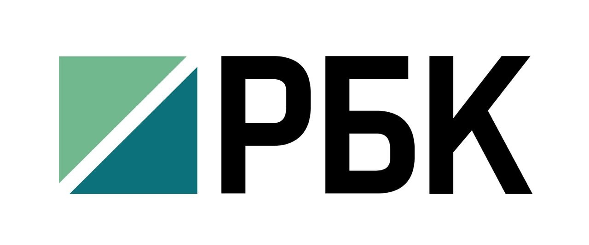
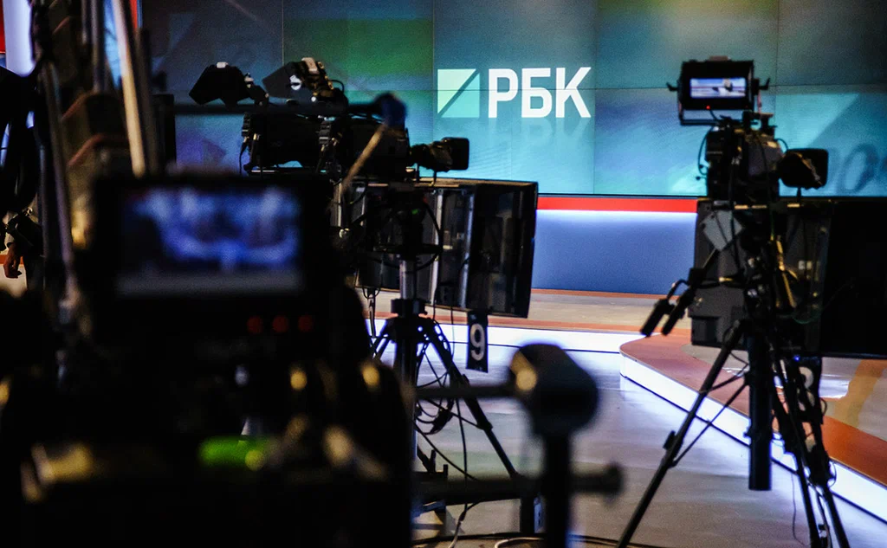
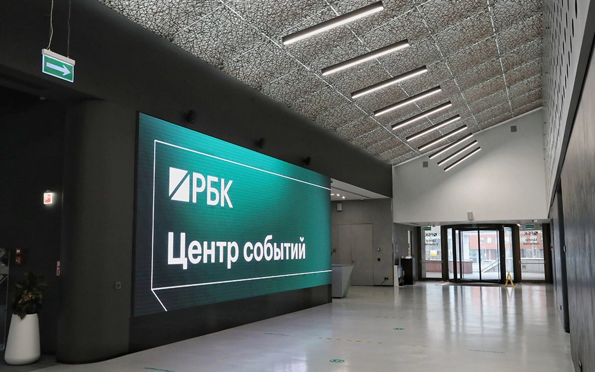

Рос
Бизнес
Консалтинг
О компании РБК
РосБизнесКонсалтинг (РБК) — группа компаний и один из крупнейших мультимедийных холдингов России, специализирующиеся на деловой информации, аналитике, а также цифровых услугах для бизнеса.
РБК была основана 17 июня 1993 года в городе Москве, и с тех пор развилась в мультипратформенную структуру, включающую:
- РБК ТВ - российский бизнес-телеканал
- rbc.ru - крупнейший деловой портал
- РБК Pro - специальный подсервис для управленцей
- РБК Quote - проект для частных инвесторов медиахолдинга РБК
РБК представляет собой многоплатформенную экосистему, предлагающую пользователям разнообразный контент и сервисы, ориентированные на различные тематические вертикали.
Основателями информационного агентства РБК являются Дмитрий Белик, Михаил Гуревич, Артём Инютин, Герман Каплун и Александр Моргульчик
Дмитрий Белик
Михаил Гуревич
Артём Инютин

Герман Каплун
Александр Моргульчик
Официальный сайт компании РБК: www.rbc.ru
История развития компании
В 1993 году РБК выпускал печатные информационно-аналитические биллютени и смогло укрпиться на медиарынке за счет того, что стало первопроходцем в интернете
В 2002 году компания объявила о запуске телеканала "РБК ТВ" и своего хостинг центра. В следующем году вышли в свет электронная газета «РБК-Daily» и первая в Рунете рекламная коммерческая сеть AdNet.ru. Экономический кризис 2008 года принес РБК потери, хотя в его преддверии бренд компании был оценен Interbrand в 215 млн долларов – РБК занял 22 позицию в рейтинге «Самые ценные российские бренды».Общий долг на конец августа 2009 года оценивался кредиторами компании в 207 млн долларов.
После экономического кризиса и большого долга компании, в 2010 году группа "ОНЭКСИМ" Михаила Прохорова выкупила 51% акций компании РБК, что стало новым этапом трансформации
Современная структура компании РБК
На сегодняшний момент, медиахолдинг РБК — это не только медиа, но и технологическая платформа для предпринимателей и инвесторов. РБК с 2015 года активно внедрял в свою инфраструктуру новые медиапроекты, например:
- Газета РБК
- РБК Тренды
- РБК Недвижимость
- РБК Спорт
- РБК Деньги
- И другие медиапроекты
Компания также активно внедряет аналитику больших данных и разрабатывает цифровые решения для B2B-сегмента. Компания насчитывает более 1500 сотрудников, а штабы РБК расположены во многих крупных городах России
В 2019 году чистая прибыль группы компаний РБК составила 3,611 млрд руб, а уже в 2020 году аудитория РБК достигла рекордных значений. Самым посещаемым месяцем стал апрель, когда аудитория интернет-проектов РБК выросла на 124 % по сравнению с аналогичным периодом 2019 года.
